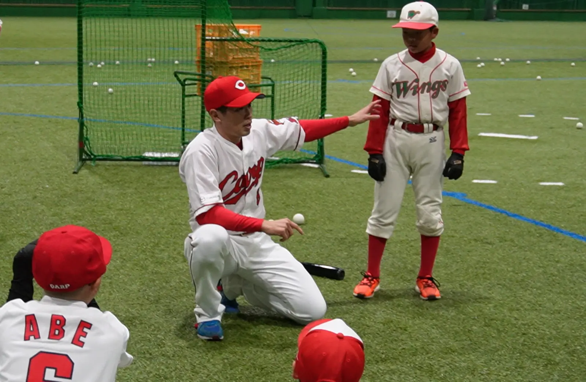

PROJECT
ミライを
つなぐ。
企業の健康経営と、こどもの健全なミライをつなぐ循環型プロジェクト。
HAKI proは、健康経営事業とこども育成事業を通じて、企業の従業員さまと地域のこどもたちの「からだ」と「こころ」の健康や、運動に対する意欲を向上させることで、社会をより豊かにしていくことを目的としています。
FOR COMPANIES
企業の健康は、一人ひとりの従業員の健康で支えられている
HAKI proは、持続可能な企業活動をするために、従業員一人ひとりの健康を第一に考えています。人間の健康問題は普遍で、社会情勢に関係なく取り組まなくてはなりません。
企業の社長さまだけでは把握しきれない従業員の健康（心の健康も含む）に、幾多の苦境や逆境を乗り越えてきたアスリートたちの“覇氣”をお届けすることによって、一度きりの人生を心身共に健康で、笑顔あふれる人生にします。

FOR EMPLOYEES
従業員さまに「とびっきり」の原動力を
個人の輝きを最大限に引き出します。そして、一人ひとりの想いや考えを丁寧に言葉にすることで、チーム内の相互理解を深め、強固な信頼関係を構築していきます。

FOR CHILDREN
子どもの健全育成のために
覇氣プロジェクトは、企業の健康経営と同時に子どもの健全育成を考え、各種スポーツ競技の発展に伴う少年少女に対する専門的技術指導や、成長期に必要なカラダ作りのための基礎トレーニング、それに伴う栄養（食育）指導を行い、スポーツ育成現場に必須である各種コンテンツを提供します。
昨今、特定のスポーツを行っていない（スマホ、テレビゲームなどに没頭している）子どもたちも増えてきており、将来の健康面も不安視されています。そんな子どもたちのためにカラダを動かす機会と環境を提供し、日頃の運動不足を解消してもらうための取り組みを提供します。
野球スクール PUMPSBUSINESS
事業内容
健康経営サポート事業
「企業のチームトレーナー」として、企業さまにとって一番の財産である従業員に対して健康プログラムを作成し、ストレス管理や栄養指導等を提供します。従業員の健康促進をサポートすることにより、企業さまの生産性を向上させます。
導入実績
イベント企画運営事業
商業施設での運動教室やトークショーなど、幅広い世代の方々を対象としたイベントを、企画から運営までトータルでサポートいたします。
導入実績
組織コーチング事業
広島に所縁のあるプロアスリートたちが、講演活動やイベント参加を通じて、自らの経験を還元します。
導入実績
アカデミー事業
子どもたちを対象とした野球教室から、高齢者向けの健康体操まで、幅広い年齢の皆さまに健康プログラムの作成と指導をお届けします。
導入実績